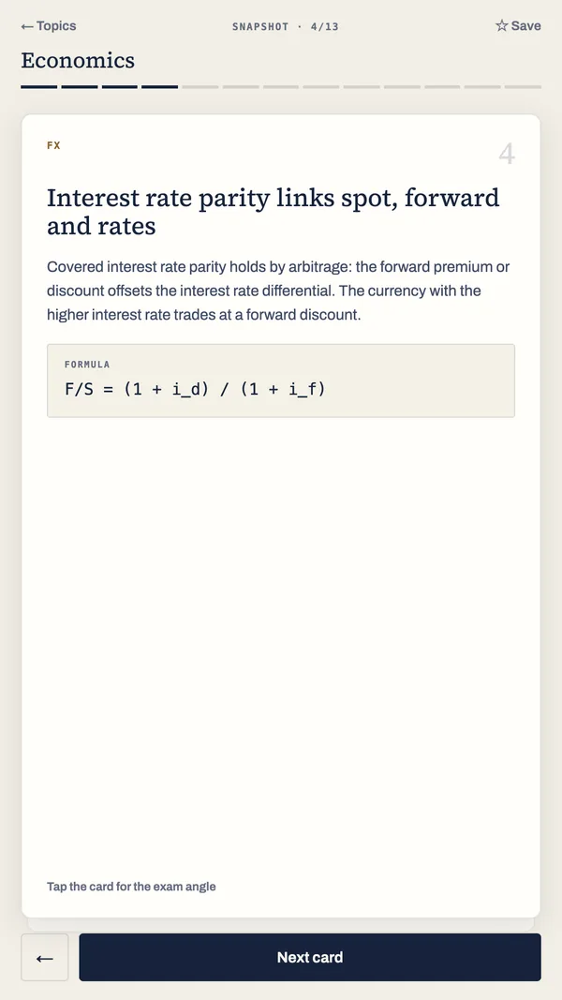
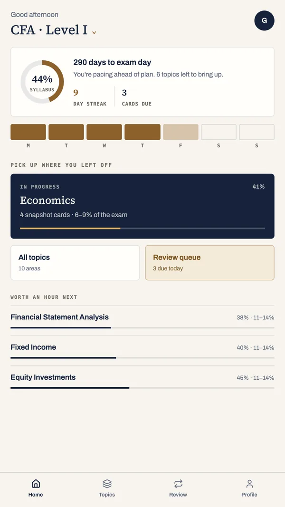
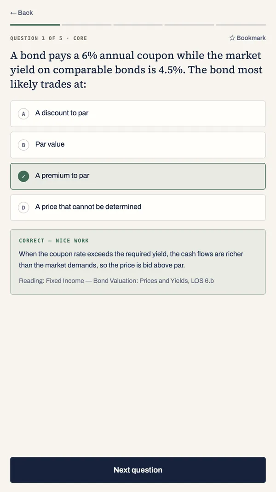
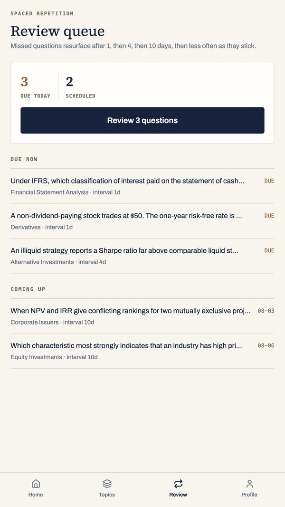
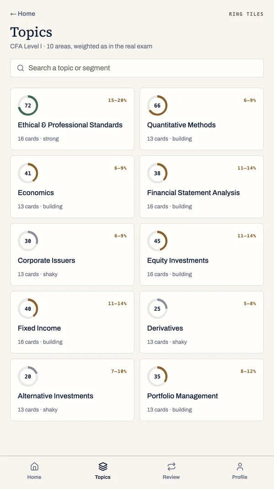
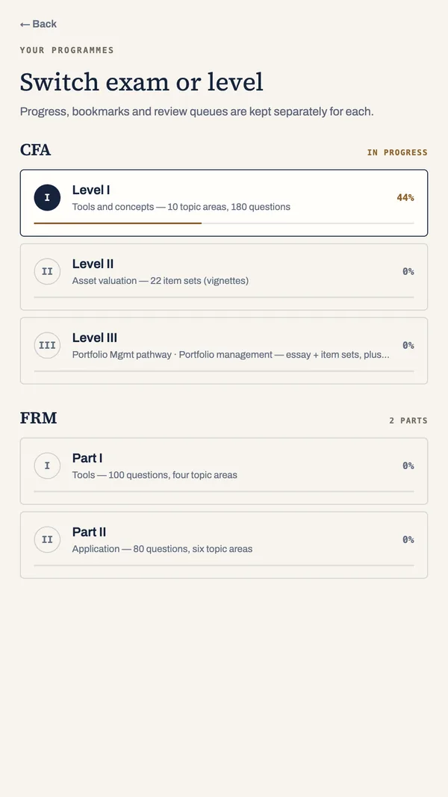

1Snapshot cards
The idea, the formula and the exam angle on one short card. Tap to reveal how the examiners actually test it.
CFA® · FRM® study
Cornerstone is a focused study companion for CFA® and FRM® candidates. Pick a topic, read a short set of snapshot cards, then prove it with five questions. That is a session.

How a session works
Each session is small enough to finish on a commute and honest enough to tell you where you stand.

The idea, the formula and the exam angle on one short card. Tap to reveal how the examiners actually test it.

Instant feedback. Every answer, right or wrong, comes with a written explanation and a curriculum reference.

What you miss comes back, then less often as it sticks.
Coverage
Topics follow the published outlines and exam weight bands. Sitting both? CFA and FRM keep completely separate progress, so one never muddies the other.


See it in under a minute
Free on this site
CFA® Level I, II and III
Every topic area across the three levels, plus the Level III pathways, with published weight bands, the official modules and free worked sample questions.
Open the map →FRM® Part I and II
All ten topic areas with their published weight bands, the official modules and free worked sample questions.
Open the map →260 terms
Finance and risk terms in plain English, with the formula and the exam angle for each.
Browse the glossary →WhatsApp channel
One practice question with a worked answer, straight to your phone. Free to follow, nothing to sign up for.
Follow the channel →Before you install
Yes, and permanently. Every topic area, snapshot card and question bank the app shipped with is free with no account and no time limit. An optional subscription opens the study segments written since, and anyone who installed the app before the subscription existed keeps those too, permanently.
Yes. All content ships inside the app, so a session on the Underground or on a plane behaves exactly like a session at home. Nothing is fetched to read a card or answer a question.
No. The app is fully usable without one. An account exists only to back your progress up so a new phone does not start you over, and you can delete it from inside the app at any time — see Delete your account.
The CFA® Program — Levels I, II and III, including the Level III pathways — and the FRM® certification, Parts I and II. 38 topic areas in total, each organised by the published topic outlines and exam weight bands.
No. Cornerstone is an independent study aid. It is not affiliated with, authorised by, endorsed by or sponsored by CFA Institute or the Global Association of Risk Professionals.
Built to respect your time. Everything the app shipped with is free, permanently, and anyone who installed before the subscription existed keeps all of it.